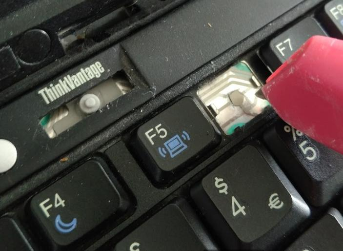

Photo booth
Photobooth writeup
I wanted to make a photobooth for my wedding that was coming up. I've used these at events previously and they have always been good fun and well used by guests.
What attracted me to this was it seemed reasonably doable, although to hire one is £200-500 for 2-3 hours. The parts are largely off the shelf, and it was also a combination of hardware and software which was a new one for me - it would require creating the system, but also creating a suitable mount and enclosure for it to stand on and be presentable.
The photobooth would ideally be:
- Portable, as it would have to be brought to the venue
- User friendly, I wanted it to be left to the users to operate (aside from infrequent paper changes etc.)
- Quick to use. People may not always be patient so ideally the whole process (pictures & printing) would not take much longer than 2 minutes
- Cheap. I was interested in bootstrapping one together for as little as possible. This meant re-using old kit where possible.
- Reliable. Although there will always be a bit more leeway with a homemade solution over a professional service, there are still expectations and it needs to be reasonably reliable / not too buggy
- Good looking! Always important for people to actually use it. A jumble of wires on their own probably would not cut it.
And this is how it turned out ...
Concept
The plan was to have a screen that would show users their ‘live’ picture, some kind of input button, a camera feeding into a script, and then a printer. The script would apply filters, format nicely and handle input / output.
A tablet seemed a good choice for the screen – touchscreen, decent viewing angle (unlike most monitors), and front facing camera are all useful features. I had also one sitting unused which made this an easy decision! An iPad could be used for this and I think there are already good photobooth apps, but I wanted more control and also the tablet I had spare could be dedicated to something like this (largely because it was not that good as a tablet!).
For the camera a flash is really required (as opposed to using the tablet's front camera), due to poor lighting and to capture definition. In terms of camera control though it either comes down to a manufacturer API/drivers, which realistically would require a professional grade camera, or the ones compatible with the excellent gPhoto2 library – which to be fair is quite extensive! Unfortunately this was not the ones I had available, so this meant using eBay/gumtree/Facebook marketplace as the next best option.
Hunting one of these down was a pain as it was across so many product ranges compatible with gPhoto2, and volume is low for 10 year old digital cameras. Canon Ixus’s seemed the best bet, and I managed to grab a Canon Ixus 500 for £13.49. Although this was listed as compatible on the gPhoto2 page, until testing it is difficult to know whether it will have the full feature set to meet all the functionality required (taking photos, using flash, repeat photos and fairly quick turnaround time). Fortunately it did, with a few adaptations which I will come onto later.
For the ‘back end’ I had an old, unloved & unused laptop that seemed a good match. This was a Thinkpad X60 which had good Ubuntu driver support. It also had 3xUSB ports and ethernet.
The printer was another case of ‘doing your research’. The Canon Selphy range was recommended for similar uses, and had quick printing time. I managed to obtain a Canon Selphy CP810 off facebook marketplace for £20, which came with paper and ink.
Concept to reality – the system
OK so now I had the key parts, the next step was to look at how to turn this into a functional photobooth system. I started with a basic Flask app that controlled the gphoto2 library, taking pictures and retrieving them as required. The printer was well supported and I would send it straightforward PDFs, so for testing I turned off this functionality.
Remote control of camera
The initial barebones seemed to work well but I quickly came across an initial problem.. while the camera worked well with the automation, it clearly was not it’s intended use and there would be problems with lock-ups/freezing over time. The camera would also have to be turned on manually, and if there was issues turned on and off. It was also battery powered which would surely not survive that much usage before needing swapping out.
I did contemplate trying to find a similar volt & ampage supply and connecting this to the camera terminals, but fortunately found that suitable chargers already exist (and this is a good reason for sticking with an established brand like Canon for this kind of project), and I was able to order an adapter kit (Canon ACK500) for £5.
The glitchy issue was not as easy to buy my way out of, after trying various settings, gphoto2 configs I kept hitting the same problem. One of the key requirements for me was that it could be left unattended (aside from infrequently changing printer ink etc.), so this was a big stumbling block and at one point I considered trying to buy another camera that may have been better suited.
Still, not wanting to give up on this one I still had one idea – it seemed to be fine for all the first runs, it was just over time that performance would degrade. If I could control the ‘session’, and start a new one each time there should not be an issue. To sum up, if I could turn on and off from my script, the camera would probably work..
Remote startup of camera
The idea was to control on/off through software. Unfortunately this was not available through gPhoto2 and the camera chipset would not listen when powered off. I had seen previously that USB relays were available for cheap (aimed at the IoT market), and these could definitely fit the bill with a bit of lucky soldering.
This is what I went for, and in the end the soldering worked (as evidenced by a simple test of brushing the wires together).
The cheap USB relays were well supported by libraries (search for USB relay HID), and with a simple Python library I could now turn the camera on & off!
The only slight issue here was a software one around permissions - only superusers can access the HID layer for control. There is a way to set this up for non-superusers but I issues when I tried this. Instead, ashamedly, I just throw sudo at the script (it won’t be connected up to the internet and no direct user interface, so what if they hack it anyway). For a one-off project this was just about acceptable.
Probably the last thing worth mentioning on the back end was the timings.. the only available information fed back to stdout is when pictures are downloaded off the camera (and not when the actual picture is being taken which is controlled by the camera logic, inc. focusing and charging the flash).
Fortunately however, since adding the relay this flow was consistent, and I could accurately predict when each picture would be taken from certain returned lines. This would be a calibration exercise for each camera, although it was relatively straightforward to do (just involved a stopwatch and piece of paper).
The front end
A basic Flash app was enough to control the gPhoto2 side and serve up to a front end. The tablet would then fire up a browser in full screen kiosk mode, which would show the front facing webcam and a ‘shoot’ button.
There were some issues with webcam and SSL, modern day browsers will not give access to the camera for non-HTTPS websites these days, regardless of whether it’s local network or not. I generated certs through OpenSSL, however I struggled to get this to work reliably on the tablet (after adding to trusted certs), so to be honest I just added the ‘ignore insecure warnings’ flag to the startup options (another security shocker!).
Mixing hardware calls and a Flask web app was to be honest not great, and rather than try and bridge this with async functions I found it more straightforward to monitor (and debug) by moving the hardware calls into a seperate thread that could be kept synchronous. This looks quite messy in code terms but is actually quite functional – there is only one control process operating the camera at any one time and all responses from the camera are captured and managed in serial.
On the subject of issues, the original plan was to use the Laptop wifi as a hotspot that the tablet could connect to and view the server. This did not work - either the available Ubuntu drivers did not support it or the actual laptop chipset - and I was unable to easily resolve.
Instead I took the decision to throw in an old wireless router – it may be excessive, but it works! There was also a side benefit of this that the laptop could connect to the router via ethernet, and it’s wireless adapter was still available to connect to an external network (my home internet) for development. This meant SSHing & VPNing in was more straightforward, and came in very handy as I will explain later!
The big button ...or not
The original plan was to kick off the photobooth process from a big button. This would be connected up to the laptop by whatever means possible. Having used up all the available USB ports and not having a controller that would be able to intepret the momentary switch, I decided instead to try soldering it into a keyboard key, so that pressing the button would emulate a certain key (which could then be mapped to a function to start the picture process).
However, when I tried to solder onto the two contacts I instead ended up severing one of the keyboard bus lines. Suddenly a quarter of the keyboard no longer worked! Quick retreat from this option, very luckily the keys required to enter my password still work, (and as a bonus) I can still manage to execute the key scripts based on keys available. As earlier I can remote into it from other computers so it is not the end of the world losing these inputs, although not ideal.
For now I’m shelving the button, in future versions I will give it another go (perhaps try wiring up to the audio in), but time pressures meant I wanted to get on with a functional system.
Functional system
OK there was quite a bit more on making the front end look nice, messing around with bootstrap, modals, API calls etc. but that got ironed out reasonably quickly.
The front end calls a URL which triggers the camera capture process. A job ID is returned, and then the front end calls a polling URL frequently to find the status of the job.
As the job progresses, through the polling function images are made available for display and then eventually printing is undertaken. Upon completion of the job the server signals this and the front end will refresh to start again (this goes back to the reliability mantra, in general I believe it’s best session is restarted rather than continuing the session indefinitely, even if cumbersome).
Hardware
OK so I had a working system, exciting!
The next step is to think about how this would be packaged into something that could be used as a photobooth. It was several devices, a mess of wires and power adapters and plugs so took some consideration. I sketched up the rough size of what I would need and the concept, and then went looking for a suitable ‘frame’.
Firstly I started with a cardboard box about the same size I was after and a box cutter. This worked well for getting an idea of placement and spacing inside the enclosure, before looking for the permanent enclosure.
The frame I found was a ‘shabby chic’ type box from a homeware shop, made of fibreboard timber but reasonably sturdy. I did a trial fit inside this box and everything went in, so the next step was to firm up locations and how I would keep everything in place.
Upon settling this the next step was to remove the apertures – spaces in the frame for the camera, touchscreen, button (although this didn’t get used!), and printer. I cut these out with a mixture of drilling and a jabsaw.
The off cut from the touchscreen was quite large and I managed to re-use this for the tripod mount. For the tripod mount I drilled, cut, and rounded a hole to suit the tripod. This was actually flush with the screw size so it gave it extra stability. I installed blocks either side and used a bit of roofing tape on these as a bearing pad, to spread load more equally across the two sides.
The enclosure would be simply supported on top of this tripod mount, and to hold it in place I drilled a bolt hole sideways on each end of the mount. The bolts threaded through here would not take load but would stop the mount moving either side (and potentially falling off the tripod), therefore keeping it stable.
For this I took two approaches, the camera needed to be on a fixed mount but the majority of the rest of the devices would be useful to be held in place but easily removeable. The camera mount was relatively easy, and was a cheap screw mount which I cut down to size to fit in the enclosure. As cameras have the mounting screw hole there was no adaptation needed for this.
For everything else I wanted it ‘chocked’ in place, I could cut timber spacers down to size for this but I went for a cheap Jenga set instead. These were the perfect size and could be doubled up where required, and allowed for quick and flexible placement inside the enclosure. These were super glued in place and allowed fixing of all the devices in most dimensions (leaving one to allow removal). It may look different but it worked well!
Smarting it up
A bit of paint, flashing and decals then turned this:
Into the finished article:
Costings
| Item | Cost |
|---|---|
| Camera | £13.49 |
| Printer | £20 |
| Camera charger | £7.95 |
| Relay | £2.65 |
| Wooden Box | £14 |
| Tripod mount | £1.04 |
| Jenga | £4.35 |
| Buttons | £2.86 |
| TOTAL | £66.34 |
Not including the following tools / equipment listed below, that I had. This is kind of cheating on the total cost, but then if I did not have these I would have done it a different way.
- Laptop. This was a 10+ year laptop I had sitting in a cupboard and did not mind sacrificing.
- Tablet. I bought this tablet for relatively cheap a few years ago, but unfortunately it did not live up to expectations and was difficult to use as either a tablet or mini laptop, and there were also some issues with power management which led to me not doing much with it.
- Soldering iron. I did get one for this but I'm not counting as no tool cupboard is complete without.
- Tripod. This was off an old lamp. The tripod was offered round but noone seemed to want it, so it got put to use in this instead. I would say the legs are not designed for this weight and would not be comfortable with much more, but it seems to be OK.
- Jabsaw. I did also get this for cutting out the panels from the wooden box. The gaps were quite tight so it needed either a reciprocating saw or jabsaw (£2.49).
- Router. This router was an unfortunate addition (first choice would have been hotspotting from the laptop removing a part and power supply), but was not a big issue. Unfortunately you end up with a new one each time you switch in this country, so plenty of these get thrown out.
- Extension leads